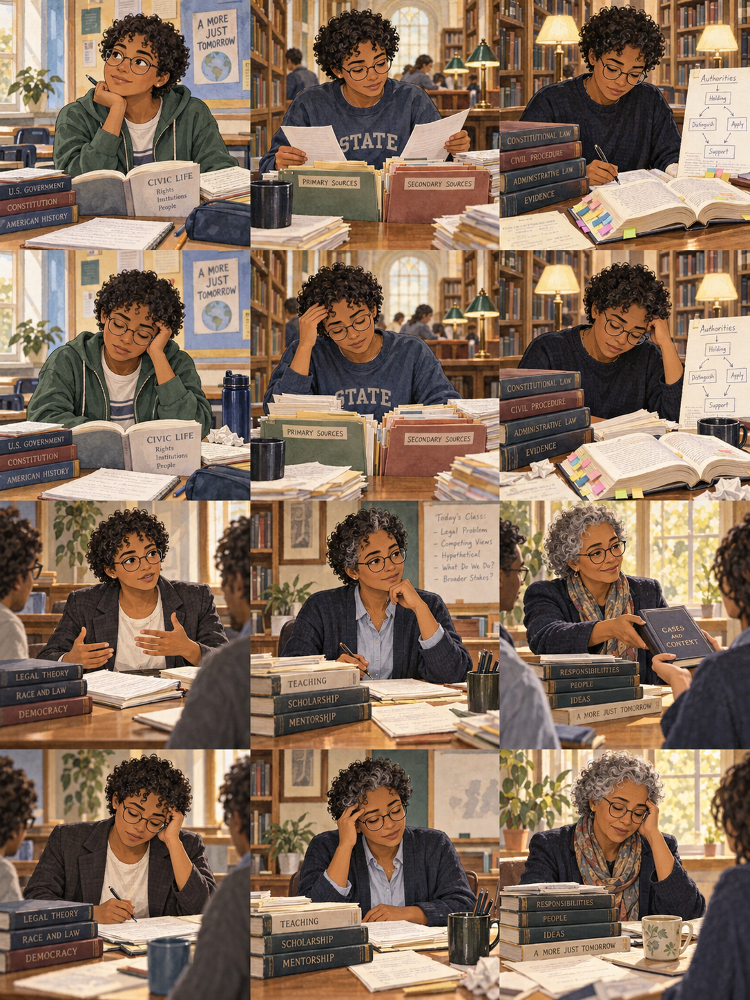

Current work
Your next move
Energy
Progress
Finished work funds lasting skills.
Work quality
Career record
Career map, skills, and save tools
The Legal Scholar has its own save. Choices are final; Back undoes ordinary work. Rest at chapter breaks restores Energy and preserves submitted quality.
A fictional U.S. career. People, institutions, awards, and research settings are invented for this campaign.
Career framing: AALS law-teaching guidance and ABA degree and bar-admission guidance. All cases, rules, outcomes, people and institutions in this game are fictional. Teaching examples are scholarly exercises, not advice for a real dispute.